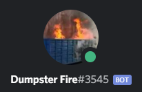

Back To Main Site
DumpsterFire is a Discord Bot coded in C# (dotnet core 3.1) with the Discord.net discord API

Click on the image above to add it to your discord server!
DumpsterFire's UserID: 551331280923394059
DumpsterFire's Base prefix is: []
the base prefix can be modified in the server settings
Somethings you should know before getting into the command help
- an alias is another name for the command
- some commands will have additional arguments surrounded by [], optional arguments will be surrounded with
{}
- if a command can only be executed by and owner (or an admin if trust admins is enabled in the server settings) there will be a + in the
front of the command
- if something is underlined then it refers to the arguments of the command
Command names and structure will be this color
Examples will be in this color
Descriptions will be this color
the format is: Command Name | Aliases | Usage
Help
8ball | 8b | []8ball {Question}
The bot will respond to your question with either a Yes, No, or Maybe
[]8ball Are you awake?
the bot will randomly respond with Yes/No/Maybe
Back to Top
+ Ban | []ban (User Mention) {Reason for ban}
the bot will allow you to ban a mentioned user and give a reason for ban
[]ban @Mee6 Not doing your job
this will ban Mee6 for not doing its job
Back to Top
+ Clear | Clean | []clear {Amount of messages from 1 to 999}
the bot will clear n amount of messages
[]clear 4
this will clear 4 messages (including the message you sent, so make sure to do more than 1)
Back to Top
Help | Commands | []help {Command Name}
the bot will give you a list of commands you can execute, their aliases, and what they do
[]help
this will give you all the commands you can execute, their aliases, and what they do
[]help 8ball
this will give you help on the 8ball command
Back to Top
Info | []info
the bot will give you info about itself
[]info
this will respond with stuff like uptime (how long the bot has been up)
Back to Top
+ Kick | []kick [User Mention] {Reason for Kick}
The bot will kick a mentioned user for a given reason
[]kick @Mee6 Not doing your job
this will kick Mee6 for not doing its job
Back to Top
+ Mute | []mute [User Mention] [Duration in seconds] {Reason for Mute}
The bot will mute a mentioned user for a given reason for a given amount of time in
seconds.
assuming you have a mute role that's set in the server settings
[]mute @Mee6 Not doing your job
this will mute Mee6 for not doing its job
Back to Top
Plantmines | Plantmine | Pm | []plantmines {Minefield size (3 - 14)} {Reveal zeros}
The bot will generate a Minesweeper Board using spoilers (so make sure that they are turned on).
Reveal zeros is off by default, setting it to true will send a field where all the zeros are uncovered
[]plantmines 8
this will create a 8x8 board
Back to Top
Ping | []ping
Ask the bot what its ping to discord
[]ping
this will respond with the bot's ping (latency) in milliseconds (ms)
Back to Top
Serverinfo | Si | []serverinfo
the bot will respond with information about the server
[]serverinfo
this will respond with stuff like how many members are in the server
Back to Top
+ Serversettings | Ss | []serversettings {Command Name}
The bot will list the serversetting's sub-commands and more info about them if you give it a command
name
[]serversettings
lists the serversettings commands
Server Settings Commands
Prefix | P | []p [new prefix]
Changes the bot's current prefix to a new one
SetChannel | scl | []setchannel [log/joinleave/member] [channel id]
sets one of the internal channels in the settings with a given channel id
ServerData | Sd | []sd
Shows all the data for the server settings
Setghostpingprotection | Setgpingprot | Setgpp | []setgpp [true/false]
Should the bot send a message if a message with a ping gets deleted? (not 100% fool proof)
Setmessage | Sm | []setmessage [join/leave] [message]
Sets the Join/Leave message
use [usr] in the message to be filled with the user mention
Setmuterole | Setmute | Smr | []setmuterole [mute role Id]
Sets the Mute role to a given role id
Setserversettings | Setss | Sss | []sss [generated string]
sets all the server setting according to the string thats generated by the server settings configurer
Toggletrustadmins | Ttrustadmins | Ttadmins | Tta | []tta [true/false]
If the bot should treat admins like the owner
Back to Top
Replicate | []replicate
the bot will send the bot's invite link so you can infect other servers with it
[]replicate
this will respond will the invite link
Back to Top